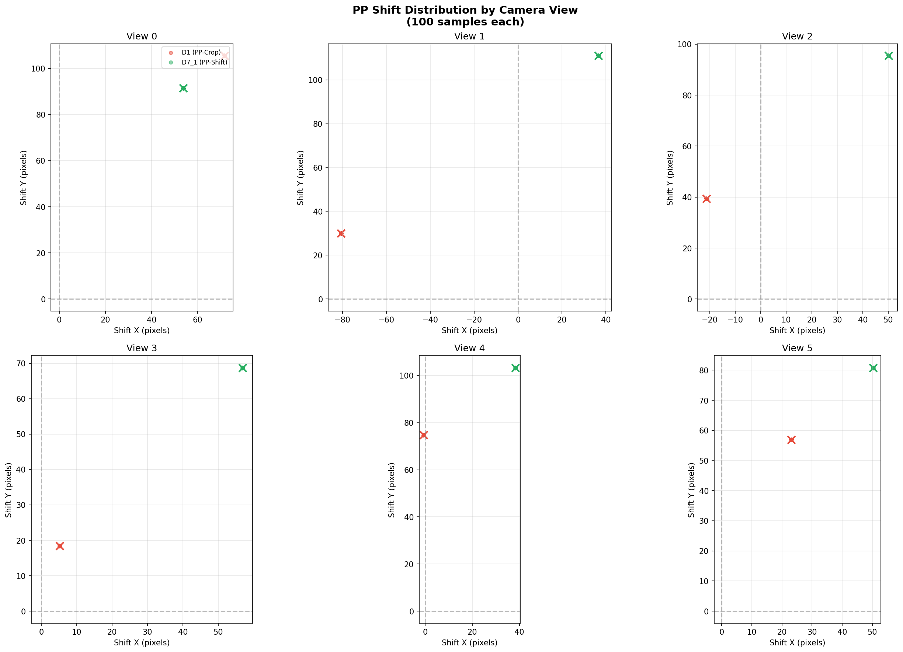
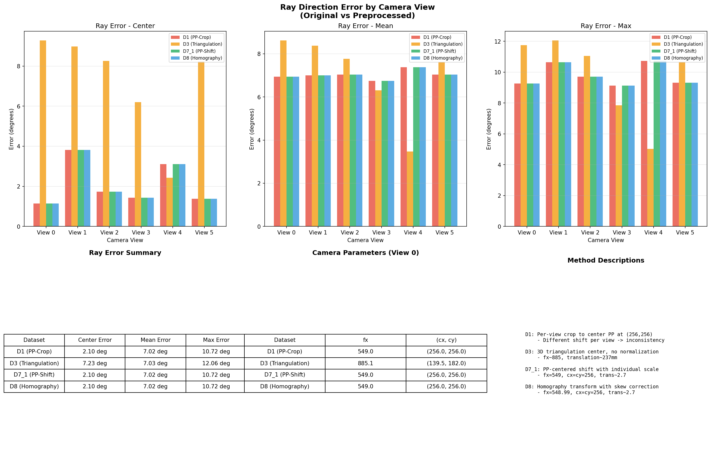
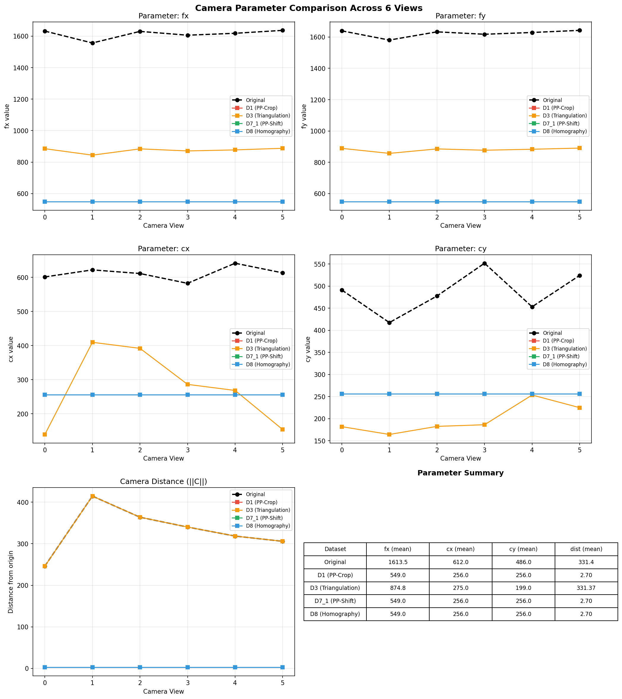

Generated: 2026-01-22 15:21:46
This report compares preprocessing methods D1, D3, D7_1, and D8 for the FaceLift mouse dataset.
| Dataset | Method | Description |
|---|---|---|
| D1 (PP-Crop) | object_centered_crop | Per-view PP crop to 256,256 |
| D3 (Triangulation) | triangulation_center | 3D triangulation center, not normalized |
| D7_1 (PP-Shift) | pp_shift_individual | PP-centered shift, individual scale |
| D8 (Homography) | homography | Precision homography transform |
Shows the principal point shift applied during preprocessing for each camera view.

Compares ray direction errors between original and preprocessed cameras.

Detailed comparison of camera intrinsics across all 6 views.
